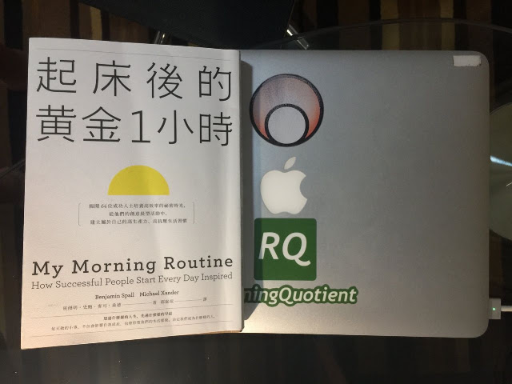

養成新習慣，也需要「技巧」

這幾天在讀《起床後的黃金1小時》這本書，很好看，推薦給大家。書中沒有太多的原則，有的是各界專業人士的「自律」生活習慣，有很正統的好習慣，也有一些少見的怪癖，但他們都自成一格，「一而再，再而三地重複做同樣的事」。
本書的兩位作者訪問了三百多位成功人士，作者提的問題都一樣：
■ 你有哪些晨間習慣？
■ 養成這套習慣多久了？有什麼改變嗎？
■ 睡前會做些什麼，好讓隔天早上能輕鬆一點？
■ 你都幾點上床睡覺？
■ 你有晨間冥想的習慣嗎？
■ 起床後大約多久才吃早餐？
■ 你會應用程式或產品來改善自己的晨間習慣嗎？
■ 你早上最重要的任務是什麼？
■ 你會一大早回覆電子郵件嗎？
■ 你的伴侶會怎麼配合、融入你的晨間習慣？
最後在書裡收錄了64位訪談者的晨間習慣，包括美軍退休四星上將史丹利．麥克里斯托將軍（Stanley McChrystal）、奧運三金得主聚貝卡．索尼（Rebecca Soni）、皮克斯與迪士尼動畫工作室總裁艾德卡特姆（Ed Catmull）。他們的晨間習慣當然各不相同，但卻有著令人驚訝的相似性：
有54%都會在晨間「冥想」，有高達78%的受訪者會在晨間「運動」，其中以跑步當作晨間運動的比例最高。作者提到：
「在我們的採訪經驗中，許多受訪者一而再、再而三地提出了同樣的觀點。過去幾年我們為自己的網站進行了不少訪談，發現很多受訪者都把晨跑和搭乘大眾運輸的通勤時間視為某種形式的冥想。」…「所有晨間鍛鍊都能轉化成冥想，其中晨跑似乎是最適合深思與冥想的運動。」( 班傑明．史鮑 Benjamin Spall / 麥可．桑德 Michael Xander 著；郭庭瑄譯：《起床後的黃金1小時》，台北：臉譜出版社，2019年7月出版，頁150)
書中最後的總結很有啟發性，作者認為「養成習慣就和所有的新技巧一樣，你需要花點時間才能完全掌握」。作者提出五項簡單的訓練步驟，有助我們刻意練習養成自己心目中的理想習慣：
- 把新習慣寫下來，盡量描述得具體一點（例如「去浴室」就很具體了，不用再加別的細節）。
- 利用「起床」作為展開晨間習慣的觸發點，而習慣中每一個字元素都會提醒你速入下一個主元素。
- 從小地方開始開始（運動五分鐘聽起來比鍛鍊半小時容易得多，也沒那麼令人卻步）。
- 完成最困難的練習後，給自己一點小獎勵。
- 每個加進晨間習慣的新元素都要經過足夠的時間實驗。面對新的事物時，不能只試個幾天就放棄。雖然各方對於「要多久才能養成一個習慣」的看法眾說紛紜，但我們建議你至少要給每個新元素一到兩週的試驗期，觀察一下效果與自我感受。
作者還提出一個觀點非常棒，要把自己當成小孩來看待，別太苛求，要「溫柔」對待他/她，「不要要求自己得在一夕之間一口氣改變所有晨間習慣，這只會讓你在還沒開始之前就宣告失敗，所有努力毀於一旦。一次增加或刪除一個新習慣就好。」這個道理其實跟訓練一樣，強度和訓練量都不能一次加太多，要溫柔對待自己，讓身心都有時間適應。
養成新習慣跟訓練一樣，都會碰到「困境」，作者說：「每個曾經試圖改變自我和生活的人都會遇到同樣的困境，而突破這些困境的唯一方法，就是勇敢面對、保持彈性，不要把單一失誤（例如今天做少了哪些事）當成退步的象徵、陷入挫敗的牢籠，要把眼光放遠一點，明天再重新開始就好了。」（《起床後的黃金1小時》，頁323）
「保持彈性」是對自己溫柔；「勇敢面對困境、失誤和挫敗」是動用自己的資源對自己負責。作者提到，在面對挑戰和挫敗時，可以回過頭來問自己：「你一開始想改善晨間習慣的初衷是什麼？」
「你期待從中得到什麼？」
這些自省式的自我對話，會激起內在本有的資源，有助於自己面對各種挑戰，回到「自律」的軌道……本書的最後一句話很妙：
「請相信這個過程，也就是『一而再，再而三地重複做同樣的事』。雖然很無趣，但非常實在，更是改變人生的關鍵。」
—
本書摘錄皆出自：班傑明．史鮑 Benjamin Spall / 麥可．桑德 Michael Xander 著；郭庭瑄譯：《起床後的黃金1小時》，台北：臉譜出版社，2019年7月出版